New incident Management Tool reduced downtime and increased system performance
- Company
- OZON
- Role
- Senior Product Designer
- Years
- 2022 to 2024
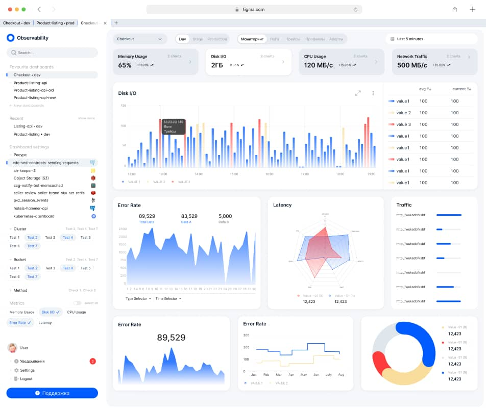
- 12%
- Incident Reduction
- 35%
- Faster Incident Resolution
- 40%
- User Adoption
Contents
About OZON
OZON is one of the largest e-commerce platforms in Russia.
At OZON, I worked in the Platform Department, which was responsible for developing products to ensure the stability of the company’s services.
My team focused on internal monitoring tools and infrastructure management, enabling operational efficiency and uptime.
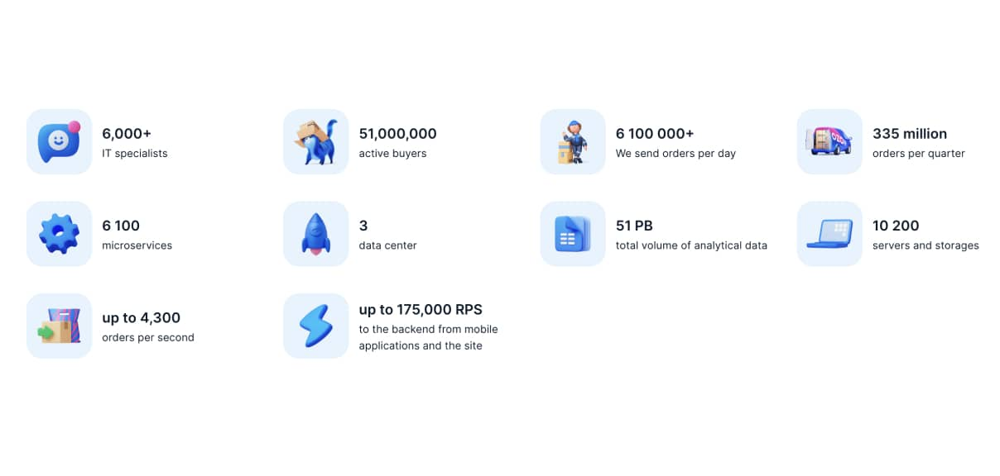
Product Overview
- The Observability Platform was designed as an internal tool to enhance the efficiency of OZON’s development.
- Users struggled to quickly identify the root causes of incidents due to the fragmented nature of these tools.
- The primary users include DevOps engineers and backend developers responsible for infrastructure stability, product developers managing their service performance, and business leads overseeing key metrics.
Context
- Before the development of this platform, OZON had various tools that only performed isolated functions, such as an alerting system for the entire infrastructure. However, a comprehensive, unified monitoring platform did not exist.
- The objective was to build a full-fledged platform from scratch, bringing together functionalities like logging, tracing, and alerting into one system.
My role
As the Senior Product Designer, I led the design efforts in collaboration with a cross-functional team, including backend developers (experts in alerting, logging, tracing, and monitoring systems), frontend developers, two other designers, and a product manager.
Additionally, I gathered requirements from product teams managing individual services and conducted brainstorming sessions with the stakeholders of the platform to identify potential use cases.
In her role at Ozon, Elizaveta has been key in managing a team of designers to develop an observability and monitoring product ecosystem alongside an internal communication product.
Her innovative design and optimisation strategies significantly enhanced our system's efficiency, evidenced by a 12% reduction in technical incidents and a 35% improvement in incident resolution times.
Team
- Senior Product Designer
- Backend developers
- Frontend developers
- Designers
- Product manager
Goal
Challenges
- Designing for a highly specific audience — internal developers accustomed to working with command-line interfaces
- Competitive products were highly technical, often lacking quality UX and failing to consider user pain points and workflows for resolving issues.
Key metrics
- Decreasing average incident resolution time from 2 to 1 days
- Improving the overall ability to predict and prevent incidents
Approach to the Solution
I collaborated closely with the Product Manager to gather requirements from different groups of stakeholders: backend developers, DevOps engineers, and business leaders.
User research
I conducted qualitative research with 20 internal users, divided into three main groups:
- Backend DevelopersTechnical users responsible for maintaining infrastructure stability and addressing incidents. They frequently interact with the monitoring tools to manage uptime and system performance.
- Business LeadersNon-technical users focused on high-level metrics and the impact of incidents on business operations. They rely on insights from the development team but require more accessible data for decision-making.
- Product Team LeadsUsers who oversee the performance of various services and products. They require a detailed view of system health and need tools to manage multiple services and incidents effectively.
Through one-on-one interviews, I gathered feedback on our design and identified key pain points. These interviews helped uncover specific needs across different user groups, which informed the redesign of our platform’s monitoring tools.
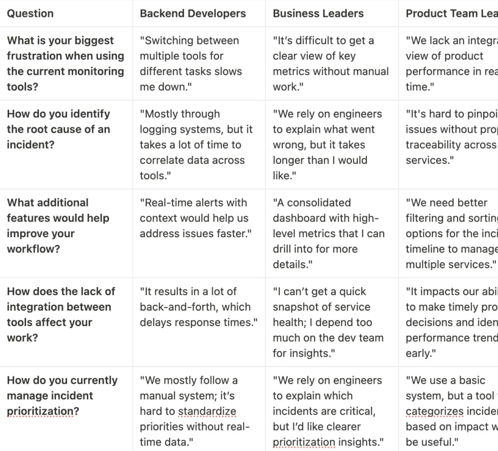
I was able to identify the key challenges users faced
- How users currently handle incident resolution
- Where time is lost
- Difficulty locating the root cause of incidents
- The need for faster identification of vulnerabilities
Problem definition and solution
Problem 01
Multiple disconnected monitoring tools
- Job
- Users need a unified platform to access monitoring, logging, and tracing features without switching between tools.
- Hypothesis
- Integrating these tools into one interface will reduce time spent on switching and improve response efficiency.
- Solution
- Designed a unified interface with intuitive navigation, providing seamless access to all monitoring functions.
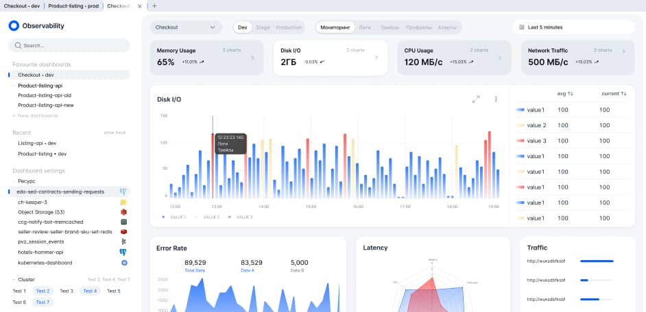
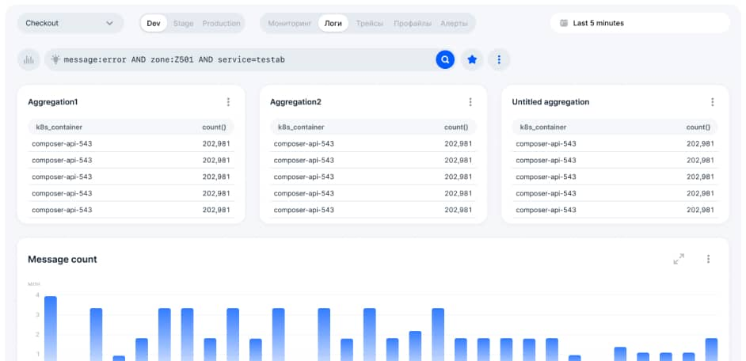
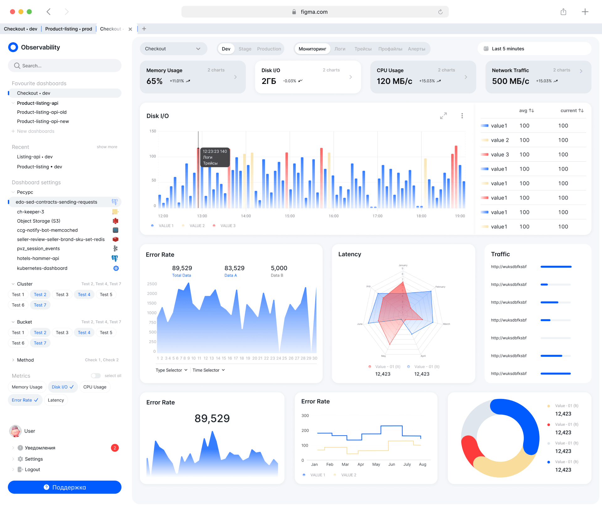
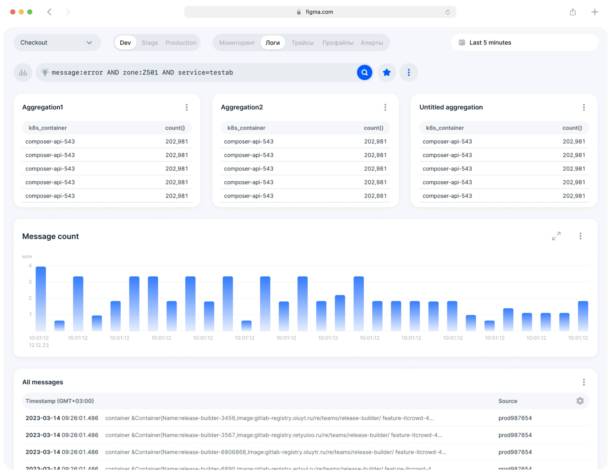
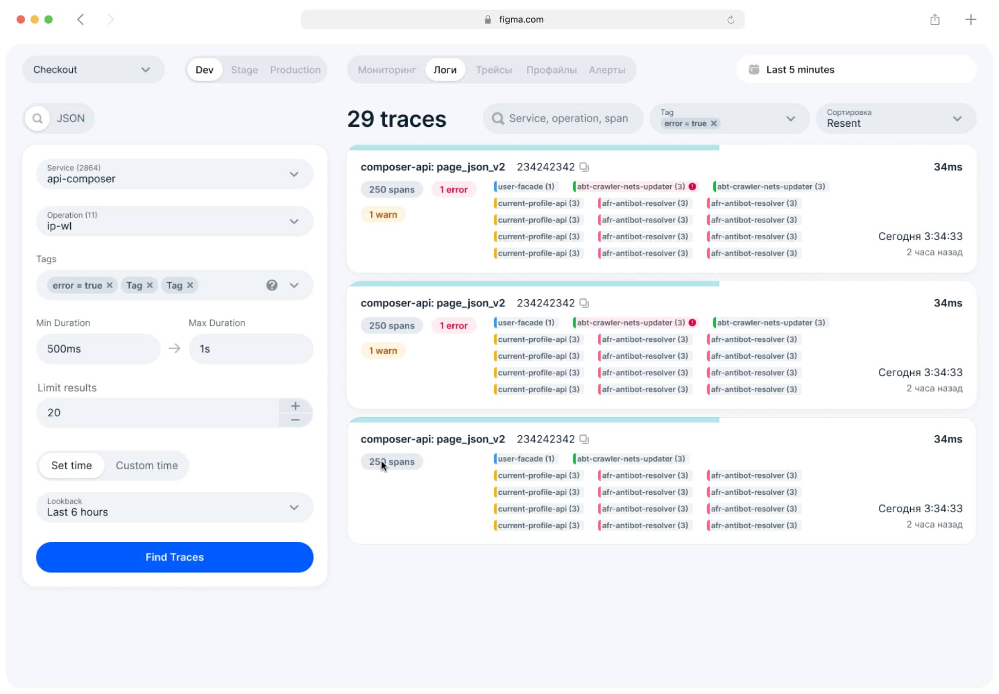
Problem 02
Inefficient and Delayed Incident Notifications
- Job
- Users needed real-time, actionable alerts that are easy to understand and provide immediate context for incidents.
- Hypothesis
- A well-structured notification system would improve the speed of incident detection and resolution.
- Solution
- I designed a notification system that provides clear, prioritized alerts with relevant context, offering users real-time updates and immediate access to critical data. Alerts were integrated across the platform for seamless access to related logs and metrics.
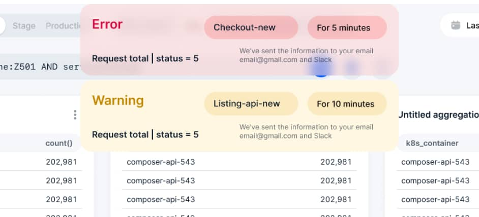
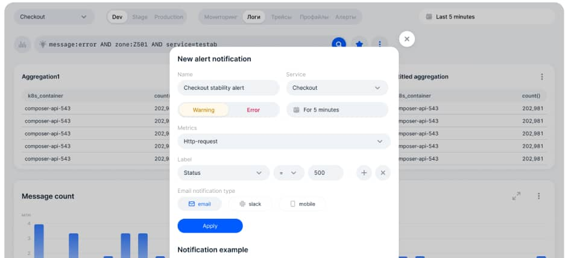
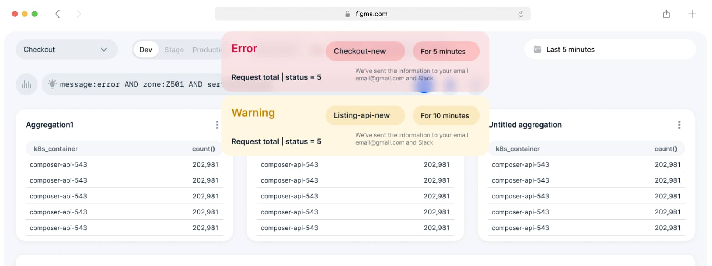
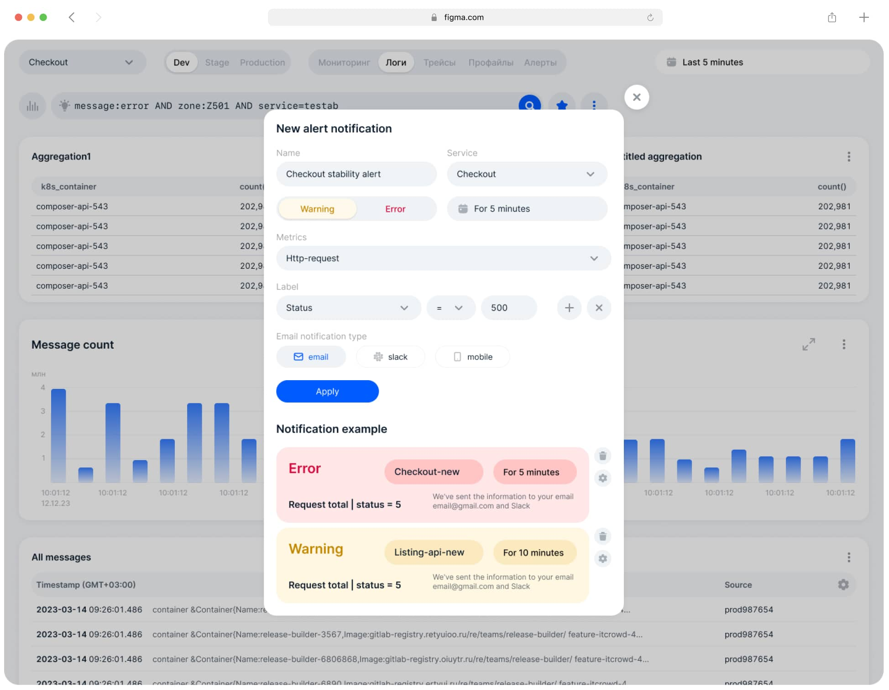
Problem 03
Design system limitations
- Job
- Developers require a design system that supports complex technical workflows without cumbersome workarounds.
- Hypothesis
- Expanding the design system with additional components will improve user efficiency and flexibility.
- Solution
- Expanded the design system by introducing new components, enhancing the platform's flexibility and user experience for advanced developer tasks.
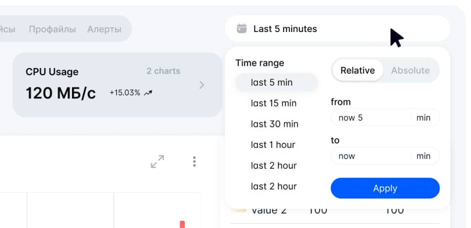
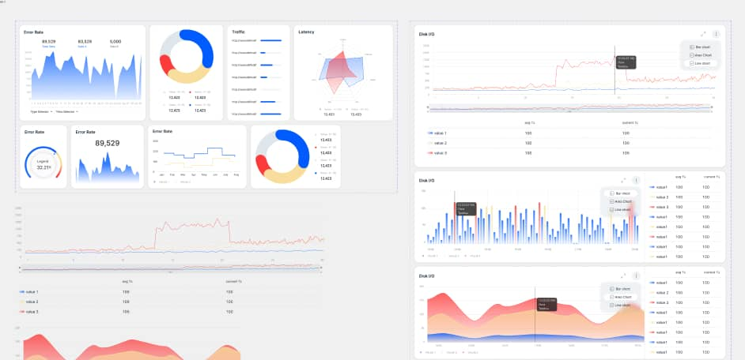
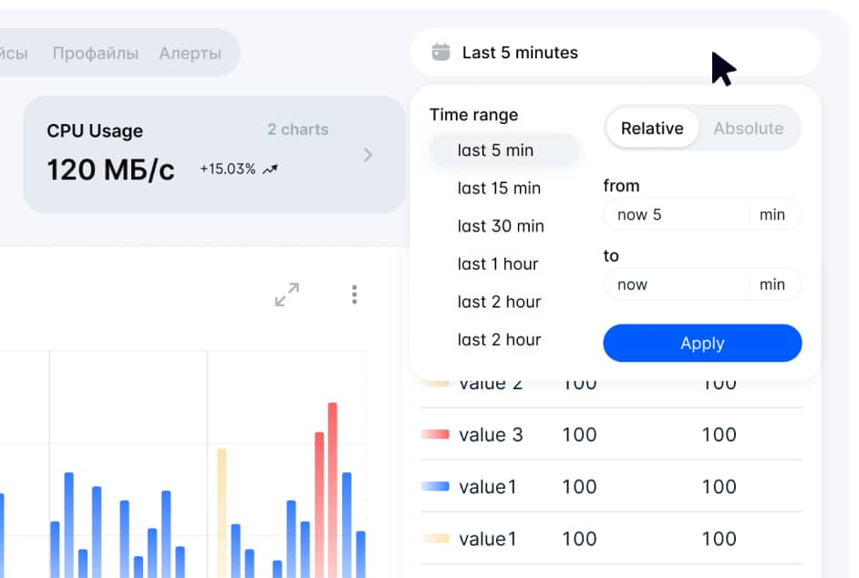
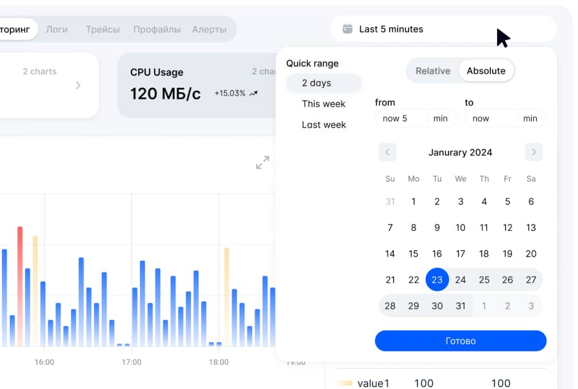
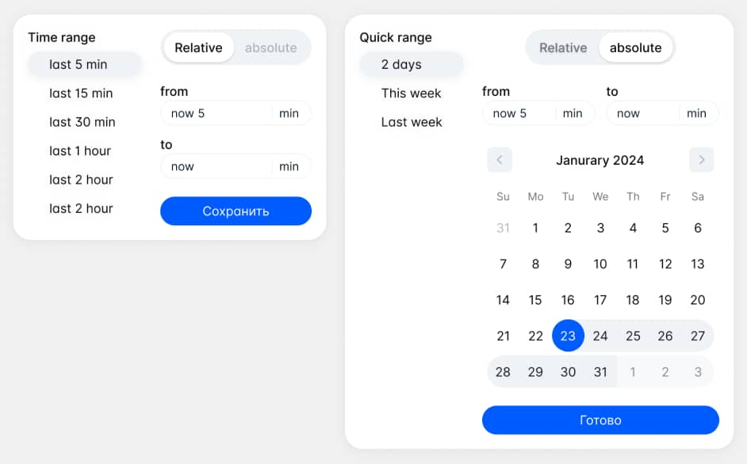
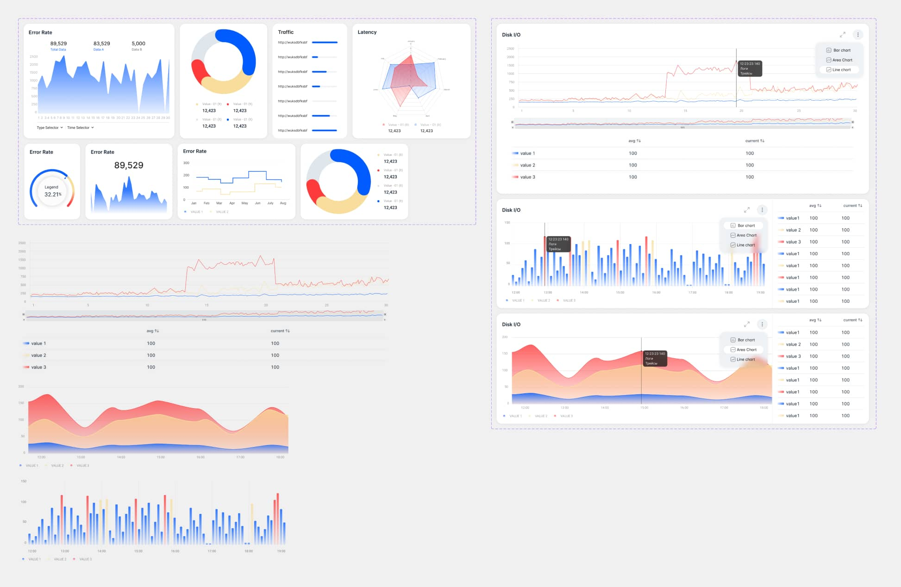
Results and Metrics
We conducted cohort-based rollouts, gradually introducing the new features to select user groups to gather real-time feedback.
Continuous data monitoring through analytics tools allowed us to track improvements in incident handling and user satisfaction, ensuring that the results were both measurable and actionable.
- 12%
- Incident Reduction
- Reduced the number of incidents by 12% through optimized graph displays and alerts.
- 35%
- Faster Incident Resolution
- Improved response times by 35%, speeding up incident identification and resolution.
- 40%
- User Adoption
- Increased user adoption by 40%, with over 90% of the IT team using the platform as their primary tool for monitoring.
Challenges Overcome
One key difficulty was designing for a highly technical audience. To meet their needs, I had to continuously refine the design based on user feedback.
Another major challenge was integrating multiple monitoring tools and handling large volumes of data, which required optimizing the platform’s performance and data visualization.
Conclusion and Reflection
This project taught me how crucial it is to deeply understand technical workflows. Engaging users early in the design process helped ensure the platform was tailored to their exact needs.
Process Improvements
For future projects, I would improve the process by streamlining stakeholder communication and increasing the frequency of design validation with users. This would ensure smoother alignment between business goals and technical requirements while maintaining the product’s usability.